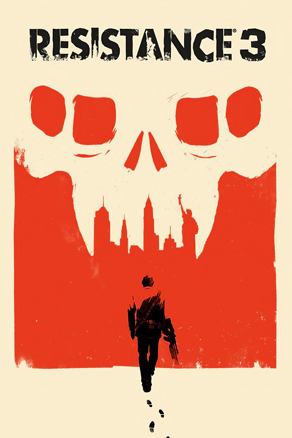

Resistance 3
Resistance 3
Details
|  | |
| Playtime | Not Played |
| Last Activity | Never |
| Added | 5/4/2025 15:28:29 |
| Modified | 5/4/2025 15:34:55 |
| Completion Status | Not Played |
| Library | Playnite |
| Source | |
| Platform | Sony PlayStation 3 |
| Release Date | 9/6/2011 |
| Community Score | |
| Critic Score | 83 |
| User Score | |
| Genre | First-person shooter |
| Developer | Insomniac Games |
| Publisher | Sony Computer Entertainment |
| Feature | Multiplayer Single Player |
| Links | Wikipedia MobyGames |
| Tag | [People] composer: Boris Salchow [People] designer: Drew Murray [People] director: Marcus Smith [People] writer: Jon Paquette |
Description
Resistance 3 is a 2011 first-person shooter video game developed by Insomniac Games and published by Sony Computer Entertainment for the PlayStation 3. It is the third installment in the Resistance series and the last to be developed by Insomniac Games. Resistance 3 is the first in the series to support 3D and PlayStation Move and was the first to introduce the PSN Pass program. The game shifts away from the military aspect of Resistance: Fall of Man and Resistance 2 and takes on a post-apocalyptic survival-horror feel.
Resistance 3 received generally positive reviews from critics, some of whom deemed it the best in the series, but the game sold poorly and was deemed a commercial failure. On April 8, 2014, the Resistance 3 online servers, along with those for Resistance: Fall of Man and Resistance 2, were shut down by Sony.
Gameplay
The game retains mostly the same gameplay mechanics as its predecessor albeit with several changes. The weapon wheel and health bar from the first Resistance game return. There are also new environmental objects such as chimeran plants which explode when shot. The game sees a mixture of new and old weapons; returning weapons include the Bullseye, Magnum, Rossmore, Auger, Marksman and Carbine. New weapons include the Mutator, which shoots biological mist that causes enemies to eventually explode causing splash damage, the Deadeye sniper rifle, and a new food-can based explosive, the shrapnel grenade, which releases a shower of nails when it explodes. Weapons are upgradeable, and become more powerful the more they are used. Humans are forced to assemble their weapons from whatever scrap they can gather. The game features PlayStation Move support and Stereoscopic 3D. Additionally, players can utilize the PlayStation Sharp Shooter peripheral attachment.
Multiplayer
Resistance 3 featured an online 16-player competitive multiplayer component. It offered five modes: Team Deathmatch, Chain Reaction, Deathmatch, Breach, and Capture the Flag. It also included a customizable progression system where players spend points earned by playing online to unlock customized loadouts that include various attributes. There was also a co-operative mode where players could team up to play through the story mode either online or split-screen. Game Informer's podcast revealed that there would be no eight-player co-op as in Resistance 2. The multiplayer maps were set in locations around the world, such as the Fort Lamy prison in Chad; the Seaside of Glamorgan, Wales, UK; Alice Springs in Australia; New York City in the United States; the Trainyard in Bogota, Colombia. Some of the locations these maps took place in are not included in the story mode.
Sony turned off the servers for the Resistance trilogy on April 8, 2014.
Plot
In 1953, shortly after Lt. Nathan Hale's death, Corporal Joseph Capelli, the only remaining member of the Sentinels, is dishonorably discharged for executing the former, despite having done it due to Hale having turned into a Chimera. Four years later, Capelli marries Susan Farley, the adoptive-sister of Nathan Hale, and now lives with a community of survivors in Haven, Oklahoma. Despite their best efforts, they are discovered by Chimeran forces, who have launched a full-scale genocide against the human race, now that their virus can be cured. Capelli and his militia company fight off the attackers, but not before they summon a massive terraforming platform to destroy the town.
While prepping for evacuation, Capelli runs into Dr. Fyoder Malikov, who explains that the Chimera have opened a wormhole in the middle of New York as part of their plan to permanently freeze the planet and render it uninhabitable for humanity. Capelli refuses to help him, but his wife begs him to reconsider, as their son is too weak to survive such a harsh environment. Stealing an old trawler, the two make their way up the Mississippi River, fighting off hordes of feral Chimera until the boat is destroyed by a Goliath. Upon awakening, they find that the currents have brought them to St. Louis, Missouri.
With Malikov too injured to continue, Capelli enters the city and links up with a survivalist group known as the Remnants. In exchange for his help in fixing their transport, their leader, Charlie, agrees to take them to New York. A squad of Chimeran fighters ambush them near Mount Pleasant, Pennsylvania, forcing Capelli and Malikov to ditch the Remnants. After working together to evade enemy search parties, the two reach an abandoned coal town occupied by another group of survivors. They learn that the town priest, Jonathan Rose, vanished several days ago while hunting for "Satan", an oversized Chimera who lives in the nearby mines. Capelli tracks down Jonathan, and they manage to kill Satan. Out of gratitude, the townsfolk fix up an old coal train so they can resume their journey.
While en route, a pack of bandits, the Wardens, assault the train. Capelli defeats them, but the train is subsequently overturned by a feral Widowmaker. Trapped under the wreckage, Capelli is forced to watch as Malikov is beheaded by the Warden leader, Mick. Taken to their hideout in Graterford Prison, he is forced to fight as a gladiator for the gang's amusement. Mick's lackey Herbert, a talented engineer, frees Capelli from confinement and tasks him with disabling the prison's defenses so he can stage a breakout. Despite Mick's interference, the plan succeeds and the Chimera lay waste to the prison and wipe out the Wardens. In the chaos, Capelli finds Mick and kills him.
Now on his own, Capelli finally reaches New York City. After sending a farewell message to his family via radio, he fights his way through the Chimera until they overwhelm him with a mortar barrage. At the last second, the Remnants arrive and extract him. Charlie offers to take him home, but Capelli persuades him to help stage an attack on a nearby terraformer.
By disabling the platform's controls and sabotaging its power core, the two are able to maneuver it into a collision course with the central tower, sealing the wormhole and returning Earth's temperatures back to normal, although Capelli nearly dies in the process. With the Chimera's chief advantage gone, human resistance groups around the world move to exterminate the Chimera and begin rebuilding all their nations, ending the Chimera threat. Capelli, meanwhile, is happily reunited with his wife and son, finally at peace with himself.
Development
In 2009, a promotional billboard for Resistance 3 was spotted on a location set for Battle: Los Angeles, a film by Columbia Pictures (a subsidiary of Sony) released in early 2011.(as the film is set in nearly one month prior to the game's release), Though neither Sony nor Insomniac Games commented on the appearance, Insomniac announced on May 25, 2010, that, in addition to creating a new multiplatform franchise, they would be developing multiple games exclusively for the PlayStation 3. The game was officially announced at Sony's Gamescom 2010 press conference in Cologne, Germany on August 17, 2010, alongside a live-action trailer for the game. On September 28, 2010, leaked concept art and screenshots were released onto a Flickr account which depict a number of different Chimera and two unidentified human characters (later confirmed in Game Informer's November 2010 cover story as Joseph Capelli and Susan Farley). When asked about the authenticity of the images, Insomniac replied with "no comment". The first gameplay was revealed at the Spike Video Game Awards, showing new weapons and enemies. Insomniac worked with Olly Moss to create the logo and box art.
The game was released on September 6, 2011 in North America, September 7 in Europe, September 8 in Australia and New Zealand, and September 9 in the United Kingdom and Ireland.
Downloadable content
The downloadable content for Resistance 3 includes the "Survival" game pack along with the "Brutality" game pack. The Survival pack includes: a Haven static theme, four new character skins for use in multiplayer, and a new multiplayer mode known as "Invasion". The Invasion mode forces Human and Chimeran teams to divide their resources with the goal of holding multiple control nodes on the map simultaneously. The more nodes a team holds, the faster they score points to achieve victory. The Brutality game pack is a survival-based wave mode which consists of the player roaming around a version of the Seaside multiplayer map, searching for new weapons along with ammunition and health to defend against the hordes of enemies. All weapons from the campaign can be found around the map and upgrade the more they are used. The game pack also includes seven tracks from the acclaimed heavy metal band Mastodon along with a prison theme and Mick Cutler skin for use in multiplayer.
Both packs were removed in March 2014 from PlayStation Store, although only in Europe, around the same time of the multiplayer servers closure. However, the Brutality pack returned shortly after, possibly due to being also playable in singleplayer.
Owners of specially marked copies of SOCOM 4 were able to download and play the beta on August 4 using the codes provided with that game, while PlayStation Plus subscribers in Region 2 territories gained access on August 10. On August 23, the beta opened to worldwide subscribers of PlayStation Plus. Insomniac announced that they would give away codes via Facebook and Twitter to join the beta. The public beta began on August 30. The beta offered two multiplayer modes: Team Deathmatch and Chain Reaction. These modes were playable on two maps. People that played the beta between August 30 and September 4 received a SRPA Nathan Hale skin for Resistance 3. The beta ended on September 4. Resistance 3 has two demos, one for purchasing Battle: Los Angeles on Blu-ray and the other is downloadable from the PlayStation Store.
Global Resistance was a social media strategy game designed to promote the release of Resistance 3, where players could choose to play as Human or Chimera. Global Resistance had exclusive unlockable content for Resistance 3, like skins, artworks and videos. The game was disabled when the multiplayer servers for the Resistance trilogy closed on April 8, 2014.
Resistance 3 came in two special editions. The Doomsday edition of Resistance 3 includes a copy of the game and a Move Controller bundle which includes the PlayStation Move controller, the PlayStation Move Sharp Shooter Attachment, the PlayStation Move navigation controller and the PlayStation Eye camera. The bundle was available in North America and Latin America.
In Europe, the Survivor edition is available which includes Joseph Capelli's journal, Chimera firing range target, SRPA playing cards, a canvas satchel, SRPA hip flask and Fight for Freedom toy soldiers. Also released in Europe is the special edition which includes steelbook packaging, vinyl effect Blu-ray disc, SRPA Black Ops skin, infected Nathan Hale skin, air fuel grenade, special multiplayer title "Sentinel" and a multiplayer booster.
Reception
Resistance 3 received "favorable" reviews according to the review aggregation website Metacritic. IGN said, "In terms of tone, Insomniac has really amped up the gut-wrenching terror for Resistance 3. This is the darkest and most violent game in the series, and almost the entire second act of the game will have you on the edge of your seat." Thierry Nguyen of 1UP.com said that "While Resistance 3 clearly steps forward as a improvement to the series, it's still not quite a great game overall."
GameSpot praised the game for its exciting, deep campaign and fun multiplayer and said, "No matter what your gaming setup, you're in for a treat. Resistance 3 offers a brand of excitement you won't find in any other shooter franchise." Game Informer criticized the "bland environments", "predictable" level design, and "numerous glitches" that "halt the flow of the game entirely." In Japan, Famitsu gave it a score of one nine, two eights, and one nine for a total of 34 out of 40.
The A.V. Club gave it a B+, saying that the game "delivers the goods, make no mistake. They just happen to be the goods that gamers already had, dolled up in a shiny new package." Common Sense Media gave it four stars out of five, saying, "It's not a perfect sci-fi shooter, but this new sequel from Insomniac Games is the best yet in the Resistance franchise." The Daily Telegraph similarly gave it four stars out of five and said, "Connection issues aside, Resistance 3 really is one of the most enjoyable, memorable action games in years, on any platform. It has giant arachnids, constant action, and an awesome shotgun. It's visually stunning, artistically evocative. And most importantly, it's definitely got soul. And soldiers too, which is nice." Digital Spy likewise gave it four stars out of five and said that the game "doesn't exactly rewrite the book on first-person shooters, but it offers thoroughly enjoyable gameplay, with a low learning curve, set against a strong narrative. Fans of the previous games will find much to love here, and even newcomers will find it a good jumping on point thanks to the intuitive controls." The Guardian likewise gave it four stars out of five and said it was "fast, furious and entertaining throughout but lacks the uniqueness that would boost it to the very top of the FPS ladder." However, Metro UK gave it a score of seven out of ten and said, "Although this is a considerably more interesting and accomplished game than any of its predecessors it's still nowhere near the cutting edge of the first person shooter genre. And we say that not just because of its abandonment of all that Halo introduced to the concept a decade ago."
Resistance 3 sold 180,000 copies in September and was seventh best selling game in the United States. In the UK it entered the PS3 software chart in fourth position in the first week of launch.